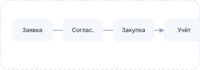
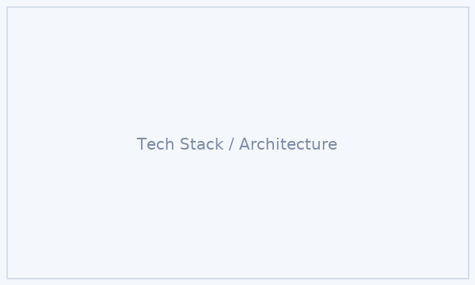
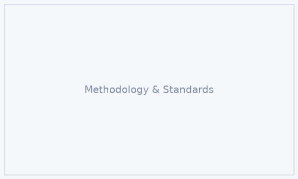

Для руководства клиники
- Прозрачная картина по парку оборудования: сколько аппаратов, где установлены и в каком состоянии.
- Быстрый доступ к данным по затратам на закупку и обслуживание.
- Основание для принятия решений об инвестициях и модернизации.
Система помогает клинике прозрачно оформлять заказы на медицинское оборудование, отслеживать их выполнение и вести точный учёт аппаратов по кабинетам и отделениям — без таблиц в Excel и потерь информации.
Проект посвящён созданию программного средства, которое автоматизирует ключевые процессы работы с медицинским оборудованием в клинике: от оформления заявок на закупку до учёта, обслуживания и списания аппаратов. Система проектируется как web-платформа, доступная сотрудникам из разных подразделений.
Решение позволяет объединить в одном месте заявки отделений, работу службы закупок, инженерной службы и руководства клиники. Все операции с оборудованием фиксируются в системе, формируя прозрачную историю для финансового анализа и управленческих решений.

Мы фокусируемся не только на учёте, но и на управленческих эффектах: снижении рисков простоев оборудования, ускорении закупок и повышении прозрачности затрат.
Проект опирается на реальные процессы клиники и методики оценки эффективности оборудования.


Сценарии работы системы тестировались на данных условной клиники с несколькими отделениями (хирургия, терапия, диагностика). На основе пилотного сценария были сформированы рекомендации по оптимизации процессов закупки и обслуживания оборудования.
Оставьте свои контакты, и мы расскажем подробнее о структуре проекта, возможностях системы и вариантах адаптации под процессы вашей организации.